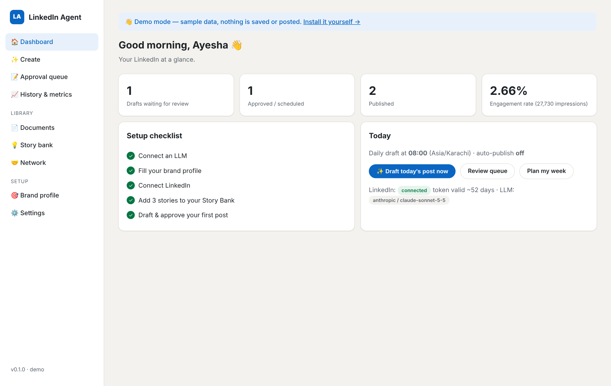

Open source · Self-hosted · v0.1.0
Your LinkedIn, on autopilot. With you in control.
LinkedIn Agent drafts a post every day, rewrites your profile, builds your resume and publishes through LinkedIn's official API, using any LLM you choose. Run it as a web portal, an MCP server, or a Claude skill.

Everything LinkedIn, in one agent
28 skills across 7 areas: ✍️ Content · 9 💬 Engagement · 2 🤝 Networking · 3 🎯 Profile · 3 💼 Career · 6 🏢 Company Page · 3 📈 Analytics · 2
A post every morning
The scheduler drafts today's post from your pillars and Story Bank. You approve; it publishes.
Any LLM
OpenAI, Claude, Gemini, Groq, OpenRouter, DeepSeek or a local Ollama model. Your key, your machine.
Approval-gated
Nothing is posted without your OK, enforced in the API, the MCP server and the Claude skill.
Profile optimizer
Headline, About, Experience, Skills, Featured and banner rewrites ready to paste.
Resumes & cover letters
ATS-friendly resumes tailored to a job description, exported to Word.
Claude skill + MCP
Use it from Claude, Claude Code, Cursor or any MCP client. Or just the web portal.
Company Pages
Page posts, hiring posts and employee-advocacy packs (with LinkedIn's Community Management API).
Self-hosted & private
SQLite on your machine, API keys and tokens encrypted at rest. MIT licensed.
How it fits together
Install
pip install git+https://github.com/jrnoorbaloch/linkedin-agent
linkedin-agent serve # open http://localhost:8787or with Docker: docker compose up -d. Full guide: Getting started.
Honest about LinkedIn's API
| Capability | Status | How |
|---|---|---|
| Post as yourself | Yes | Self-serve "Share on LinkedIn" (w_member_social) |
| First comment on your post | Yes | Same permission |
| Post as a Company Page | With approval | Community Management API (w_organization_social) |
| Edit your profile | No API | Agent writes the copy, you paste it |
| Read post analytics | Restricted | Paste metrics in History; the agent learns from them |
| DMs / connection requests | No API | Agent drafts, you send |
No scraping, no browser bots, no account risk. Read the FAQ.